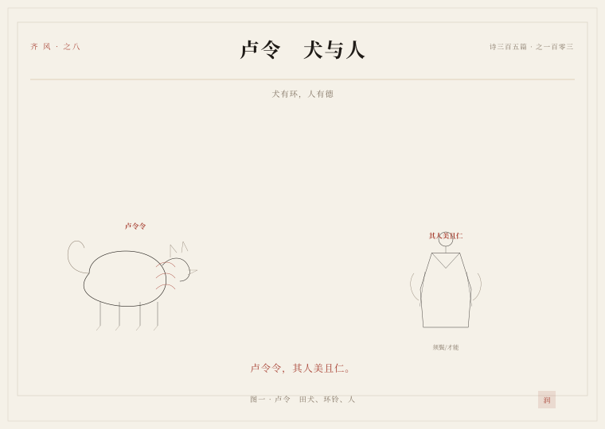
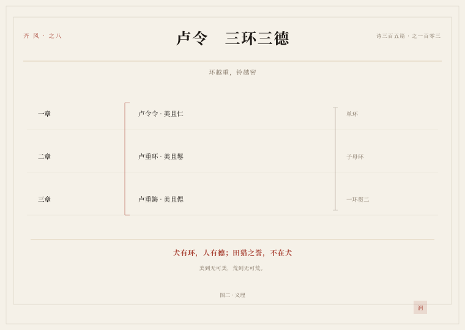

第一百零三篇 卢令
齐风 · 之八 SJ103
朗读 · 普通话
依经文原文朗读，章次不读出；配古琴底乐，不改速、不加拖腔。全库同一音色（豆包 TTS），非播音员录制。
一 解题
诗三判：
- 谁在说：齐人。见襄公田猎，先美其犬，再美其人；三章章二句，短得像一声铃。
- 说什么事：卢令令、卢重环、卢重鋂；其人美且仁、美且鬈、美且偲。只换犬饰与人德，不换猎事。
- 为何编在此：102 写“大田”，103
写“小狗”。大田不能治，小狗反见美；刺在“以犬为贤”。
《毛序》：“《卢令》，刺荒也。襄公好田猎毕弋，而不修民事，百姓苦之，故陈古以风焉。”
朱子《诗集传》：“赋也。卢，田犬也。令令，犬颔下环声。此诗大意与《还》略同。重环，子母环也。鬈，须鬓好貌。鋂，一环贯二也。偲，多须之貌，春秋传所谓‘于思’即此字，古通用耳。”
本库的看法：《卢令》是一首把“犬”写成“德”的诗。
三章只写犬的环声、重环、重鋂，再写人的仁、鬈、偲。犬越有饰，人越有德；人越有德，猎事越显。
全诗不写一句“荒”，只把“美”推到极处；美到无可美，荒就到无可荒。
先辨五事：“卢”是田犬，不是黑色；“令令”是环声，不是命令；“重环”是子母环，不是双环；“鋂”是一环贯二，不是“煤”；“偲”是多须/有才，不是“思念”。
二 经文
第一章
卢令令，其人美且仁。
第二章
卢重环，其人美且鬈。
第三章
卢重鋂，其人美且偲。
分章：三章，章二句。
三 韵读
- 一章：令、仁，真部。
- 二章：环、鬈，元部。
- 三章：鋂、偲，之部。
读法：真部清，元部圆，之部收；三章两句，像三声铃，越响越短。
四 字义与名物
- 卢：田犬；《战国策》有“韩卢”，天下之骏犬。
- 令令：犬颔下环声；重环：子母环，大环贯小环；重鋂：一大环贯二小环。
- 其人：指猎者/君；美：貌美；仁：仁恩；鬈：须鬓好，一说勇壮；偲：多须，一说有才能。
- 毕弋：毕是掩兔之网，弋是系绳射鸟；田猎之事，诗只以犬饰代。
- 三章章二句：短章促节，像猎犬奔走，铃声不断。
五 今译
田犬的环铃令令响，那个人美好又有仁恩。
田犬戴着子母环，那个人美好又须鬓好。
田犬戴着一环贯二，那个人美好又有才能。
六 章旨
- 一章：写“令令”与“仁”。犬有声，人有德；声先到，德后到。
- 二章：写“重环”与“鬈”。环加一层，貌加一层。
- 三章：写“重鋂”与“偲”。环再加重，德再加才。三层加满，猎事仍不着一字。
- 总收：犬有环，人有德；田猎之誉，不在犬。
誉犬是誉人，誉人是誉猎；猎誉满，民事荒。
七 诗教
- 赋：直陈犬饰与人德；赋而不刺，刺在言外。
- 观：观“好田猎”。君好之，百姓苦之；一铃之声，能盖一国之苦。
- 群：猎者相群，犬亦相群；群在猎场，民在田亩。
- 怨：诗里无怨，只有美。美是怨的背面。
八 分寸与边界
- 不可把“卢”当黑色。它是田犬；一读黑，犬就成颜色。
- 不可把“令令”当命令。它是环声；一读命令，诗就成政令。
- 不可把“重环”当双环。它是子母环；一读双环，形制就错。
- 不可把“鬈”当卷发。它是须鬓好/勇壮；一读卷发，人就成了异相。
- 不可把“偲”当思念。它是多须/有才；一读思念，末句就成怀人。
九 存疑
- 诗旨：毛序“刺荒，陈古以风”；朱子“大意与《还》略同”。一刺今，一刺俗；本库两存，以“犬饰”读。
- “卢”：毛传“田犬”；一说“卢”为黑色犬。从田犬，猎事才实。
- “鬈/偲”：毛传“鬈，好貌；偲，多须”；郑笺“鬈，勇壮；偲，才能”。两读皆可，本库并存。
- “重鋂”：毛传“一环贯二”；一说“鋂”为大环。从一环贯二，才与“重环”别。
- 作者与年代：毛序属襄公；朱子不言何公。无确证。
十 跨典
- 《孟子·梁惠王上》：“今王田猎于此，百姓闻王车马之音……”——田猎之乐，系于民苦；此诗以犬铃代车马音。
- 《战国策·齐策》：“韩卢”为天下之骏犬；此诗“卢”即田犬之良者。
- 《礼记·月令》：季冬“乃命导猎”，田猎有时；此诗写“好”而无时，正见荒。
- 《诗本音》：三章真、元、之，见卷五；韵部按古韵推定。
十一 双卡与图
双卡八对：
| 卢（田犬） |
卢（黑色） |
| 令令（环声） |
令令（命令） |
| 重环（子母环） |
重环（双环） |
| 重鋂（一环贯二） |
鋂（煤） |
| 鬈（须鬓好/勇壮） |
鬈（卷发） |
| 偲（多须/有才） |
偲（思念） |
| 其人（猎者/君） |
其人（犬主） |
| 美且仁（誉人） |
美且仁（赞美猎犬） |

图一 · 卢令 田犬、环铃、人

图二 · 卢令 令/重环/重鋂
读图三处：
- 犬只画背与颈：图一一只田犬背影，颈下三环；不画脸，不画全身，避开“带角箱子”的死路。
- 环三式：图二上“令/重环/重鋂”，下三只环：单环、子母环、一环贯二；环越重，铃越密。
- 人不画脸：图一右侧一位猎者，只画冠、须、衣；仁/鬈/偲都在须与冠上。